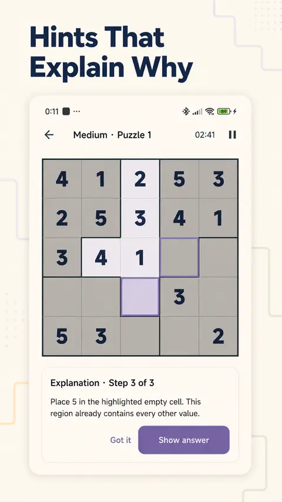
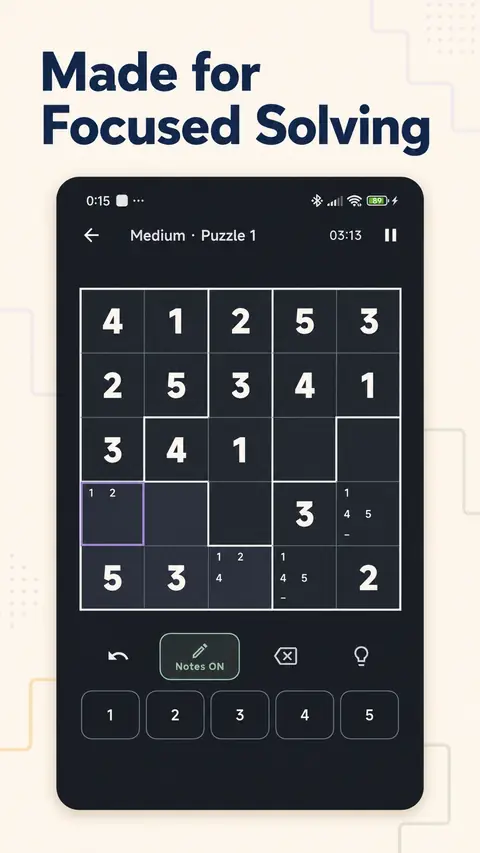

Smart Hint Explanations
Hints walk through the deduction step by step — place 5 here because the region already contains every other value — so you learn the technique.
Suguru Tectonic is a calm logic puzzle built around irregular regions and adjacency rules. Fill each region so no equal numbers touch — with Smart Hints that teach the reasoning, not just the answer.
Suguru (also called Tectonics) is a number-placement puzzle: each irregular region must contain every digit exactly once, and equal numbers may never touch — not even diagonally.
Suguru Tectonic is built for deliberate, focused solving. No timer pressure, no streak guilt — just readable boards, an interactive tutorial, and a hint system that explains why a move is correct before it shows you what it is.
Simple to read, deep to solve.
Hints walk through the deduction step by step — place 5 here because the region already contains every other value — so you learn the technique.
A fresh shared puzzle every day, built for a short focused session and steady difficulty progression.
Learn region rules and adjacency constraints by playing, not by reading a manual.
Candidate notes, full undo history, and erase support longer solving sessions without fear of mistakes.
A dedicated dark board theme for evening solving and low-light focus.
No sign-in. Progress, notes, settings, and statistics stay locally on your device.
Suguru Tectonic in its current playable build.



A calm logic puzzle for Android built around irregular regions and adjacency rules. Fill each region so no equal numbers touch — every move readable and explainable.
Instead of just revealing an answer, Smart Hints explain the reasoning step by step, so you learn the deduction technique and can apply it yourself.
Yes. The game is free with interstitial ads at non-solving boundaries. A one-time Remove Ads purchase disables them permanently.
No. There is no account or sign-in. Progress, notes, settings, and statistics are stored locally on your device.
Suguru Tectonic is available on Android via Google Play.
Free on Android with an optional one-time Remove Ads purchase.